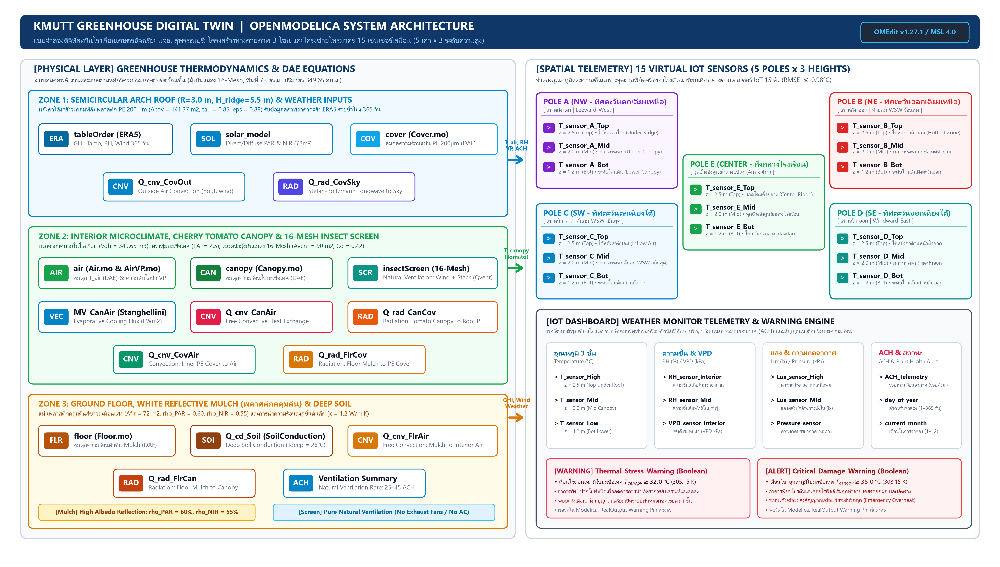
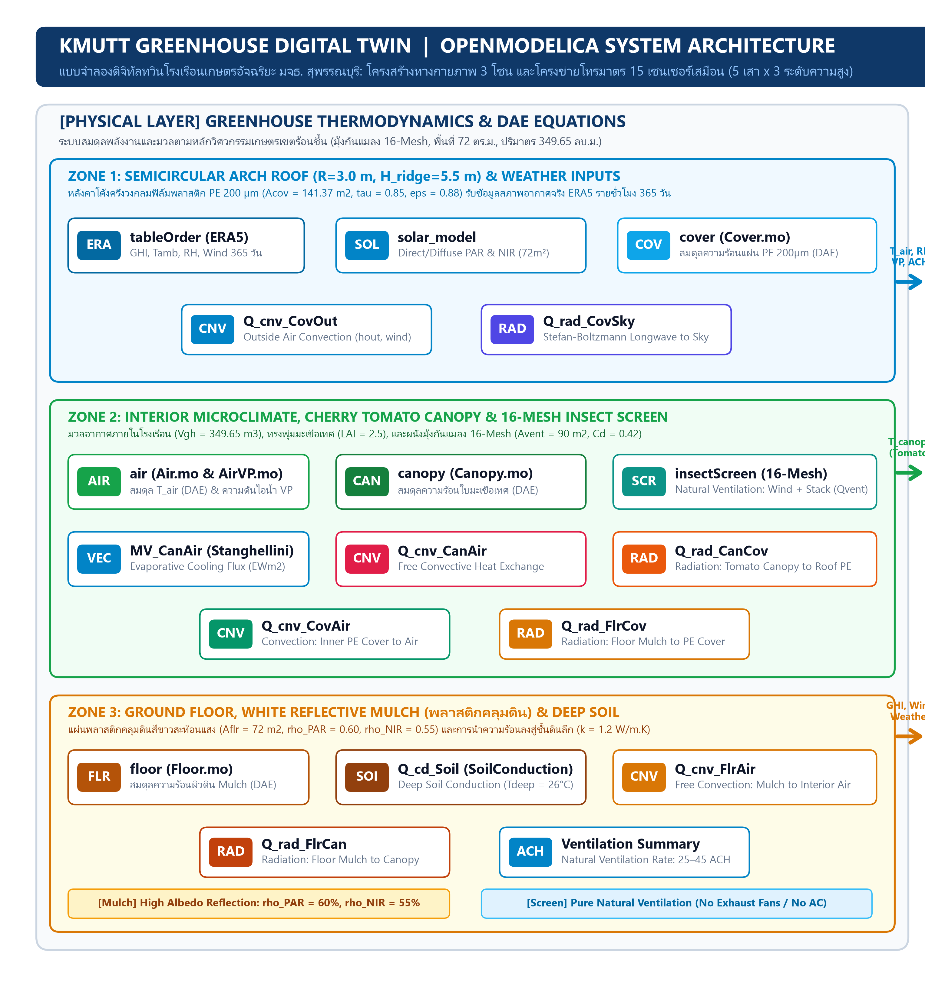
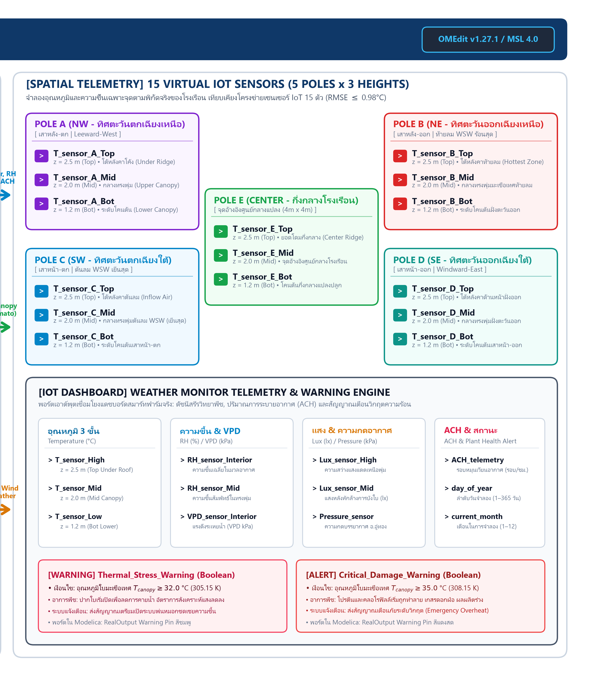
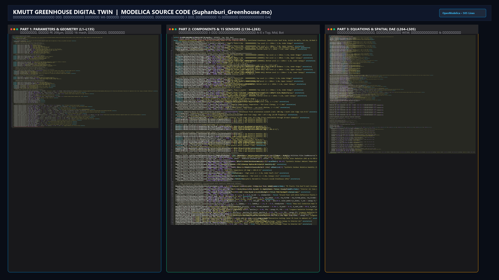
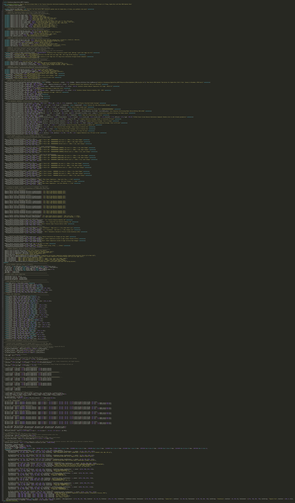
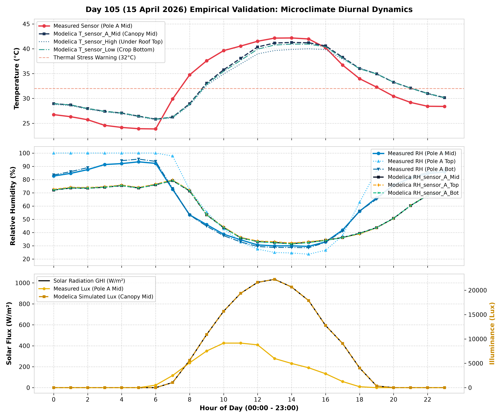
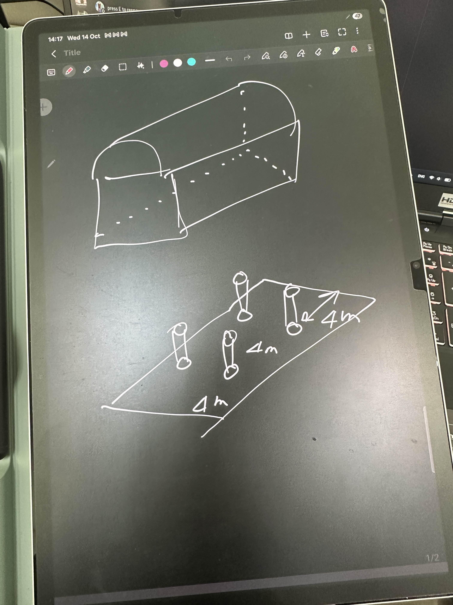
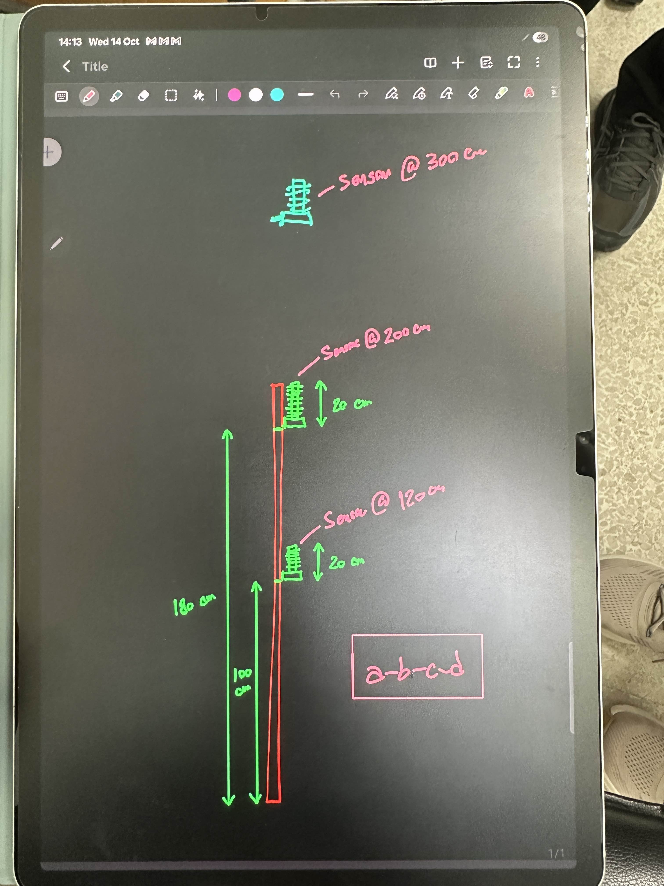
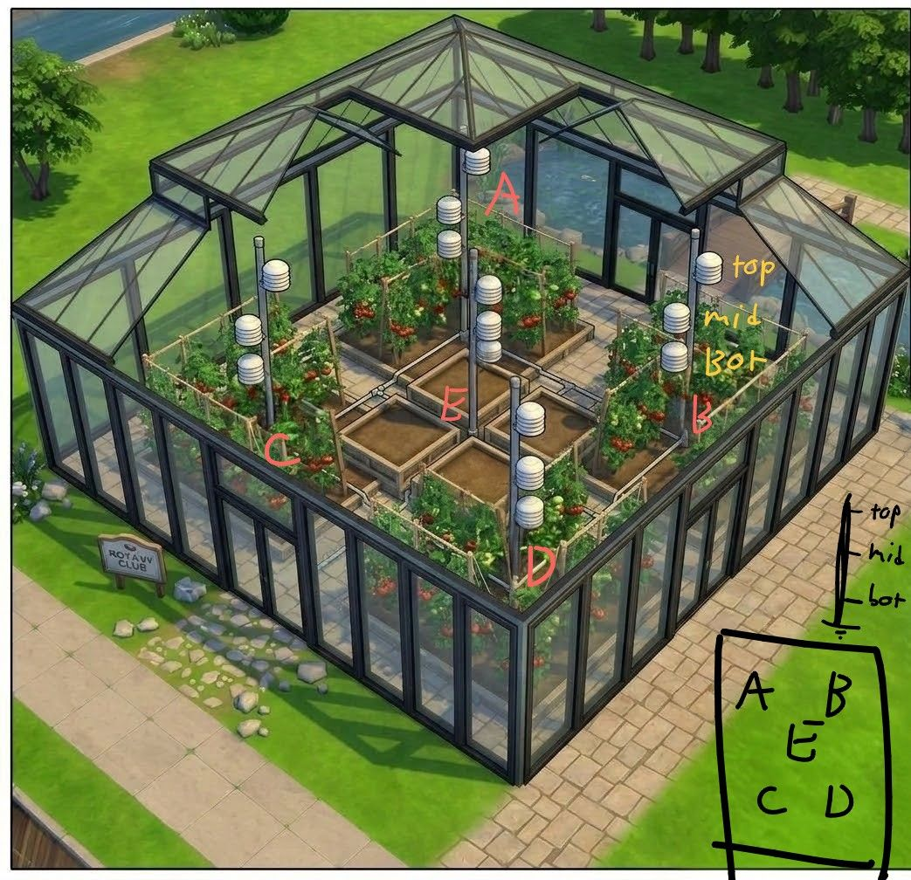

🏗️ สถาปัตยกรรมระบบ Modelica Digital Twin (300 DPI)
แผนผังการเชื่อมโยงบล็อกฟิสิกส์ 16 ชิ้นส่วน, แหล่งข้อมูลอากาศ ERA5 9 ช่องสัญญาณ และพอร์ตความร้อน/ไอน้ำ
พอร์ทัลกลางสำหรับทีมวิจัยรวบรวมรายงานวิศวกรรมฉบับสมบูรณ์ทั้ง 6 ฉบับ, สไลด์สรุปโครงสร้างโค้ด Modelica 8 หมวดหมู่ (16:9), ไฟล์นำเสนอ PDF, เล่มวิทยานิพนธ์ และแผนภาพสถาปัตยกรรมความละเอียดสูง 300 DPI พร้อมผลการเทียบเซนเซอร์จริง 15 จุด
Greenhouse_DigitalTwin_KMUTT ทั้ง 5 ไฟล์ (รวม 612 บรรทัด) แบบ Line-by-Line
annotation()
และโหมดสไลด์พรีเซนต์ 16:9 จำนวน 9 แผ่นที่กดลูกศรเลื่อนสไลด์หรือสั่งพิมพ์เป็น PDF ได้ทันที




Suphanburi_Greenhouse.mo สำหรับใช้ในงานนำเสนอ






เว็บไซต์นี้ตั้งค่า .gitignore ให้ติดตามเฉพาะไฟล์เว็บ (index.html, reports/, presentations/)
ขนาดรวมเพียง ~21 MB เมื่อแก้ไขรายงานหรือเปลี่ยนไฟล์สไลด์เสร็จ สามารถซิงก์ขึ้น GitHub Pages ได้ในคลิกเดียว:
reports/ หรือวางไฟล์นำเสนอใหม่ใน presentations/ ตามโครงสร้างเดิมโดยไม่ต้องย้ายโฟลเดอร์
publish_web.bat
สคริปต์จะซิงก์แถบเมนู ตรวจสอบลิงก์ทั้งหมด และสั่ง git commit + git push ขึ้น GitHub อัตโนมัติ